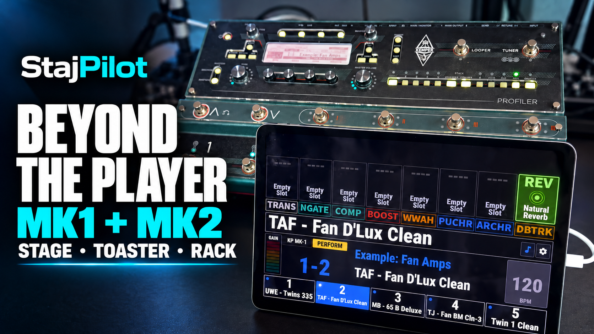

StajPilot
A clear, touch-ready display for the KEMPER PROFILER Player, Stage, Head, and Rack.
Turn an iPhone, iPad, or Android device into a stage display and MIDI controller. See rig names, effects, tuner, tempo, and the controls that match your Profiler mode, connected directly over USB MIDI.

Choose your Profiler
Player
Navigate banks and rigs, see live effect status, and use your own names and amp images in Song Mode.
Stage, Head (Toaster) & Rack
Select MK1 or MK2 in settings. View Performance names and five slots in Performance Mode; in Browser Mode, use rig navigation instead of slot controls.
Physically tested with PROFILER Player LV3 and Stage MK1. MK2 mode is included but has not yet been tested on a physical MK2. Features vary by model and mode.
Choose your platform
On your display
- Eight named, touch-controlled effect blocks
- Performance names and five slots on supported models
- Browser Mode rig navigation on MK1/MK2
- Rig, amplifier, author, and gain information
- Tempo, Tap Tempo, and Morph display
- Needle and Strobe tuner views
- Song Mode with local multilingual names and emoji
- Song Select and song editing, including amp images
- Song backup/import and the web Song Editor
- Demo Mode and a stage-visible landscape layout
No account, sign-in, subscription, or internet connection is required to use StajPilot. Connection options depend on your phone or tablet and the Profiler's USB ports; see the platform guides before connecting.
StajPilot is an independent third-party application and is not affiliated with or endorsed by Kemper GmbH.
Compatibility and proper operation with KEMPER PROFILER devices are not guaranteed. Changes to device hardware, firmware, communication protocols, or operating systems may affect, limit, or discontinue some or all functionality. Test your full setup before using it at an important event.
KEMPER and PROFILER are trademarks of Kemper GmbH. All other trademarks belong to their respective owners.
StajPilot은 독립적으로 개발된 서드파티 애플리케이션이며 Kemper GmbH와 제휴하거나 공식 승인을 받은 제품이 아닙니다. KEMPER PROFILER 기기와의 호환성 및 정상 작동은 보증되지 않습니다. 장치의 하드웨어, 펌웨어, 통신 프로토콜 또는 운영체제 변경에 따라 일부 또는 전체 기능이 제한되거나 중단될 수 있습니다. 중요한 행사 전에 전체 연결 구성을 충분히 테스트해 주세요. KEMPER와 PROFILER는 Kemper GmbH의 상표이며, 기타 모든 상표는 각 권리자에게 귀속됩니다.